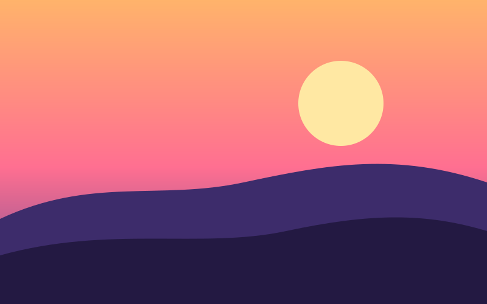

玻璃后面的内容也被折射
这一段是普通的 DOM 文字，里面有高亮、链接与 粗体。 把鼠标移到这一块上，玻璃透镜跟着走：它后面的文字、图片、画布动画、视频都被 runtime 画进场景（DOM Renderer）， 玻璃把它们模糊、弯折、放大。离开玻璃的内容照旧由浏览器画，选中、链接、读屏都不受影响。

这一页只有 import 'glassium' 与 glass 属性。后端、质量、背景都是 runtime 自己定的。
Default Glass：模糊、折射、色散、亮边、投影。背后的渐变被弯过来。
这一段是普通的 DOM 文字，里面有高亮、链接与 粗体。 把鼠标移到这一块上，玻璃透镜跟着走：它后面的文字、图片、画布动画、视频都被 runtime 画进场景（DOM Renderer）， 玻璃把它们模糊、弯折、放大。离开玻璃的内容照旧由浏览器画，选中、链接、读屏都不受影响。

glass-jelly：元素怎么动的都行（拖、过渡、JS），玻璃顺着速度拉长、停下圆回去；
glass-glide：元素一下子换了位置，玻璃抬起、飞过去、落下。只动玻璃，里面的字不变形。
glassium.morph(from, to)：形状、圆角、材质一起过渡。